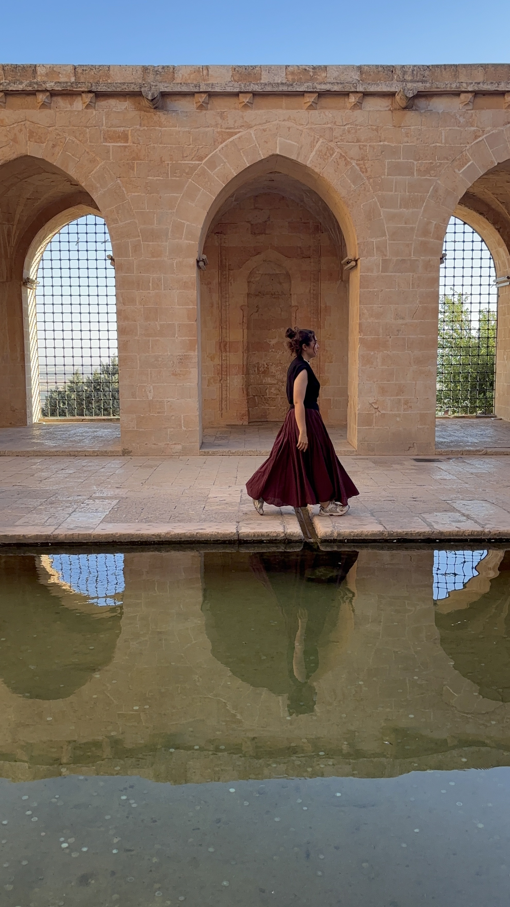

My Journey
Kübra is a passionate watercolor artist with a love for capturing the beauty of nature and human emotion. With over a decade of experience, she has developed a unique style that blends traditional techniques with modern aesthetics.While my academic journey started in Computer Engineering at Biruni University in ,art has always been my true passion.This portfolio shows my creative sides.
"Art is not what you see, but what you make others see.""
